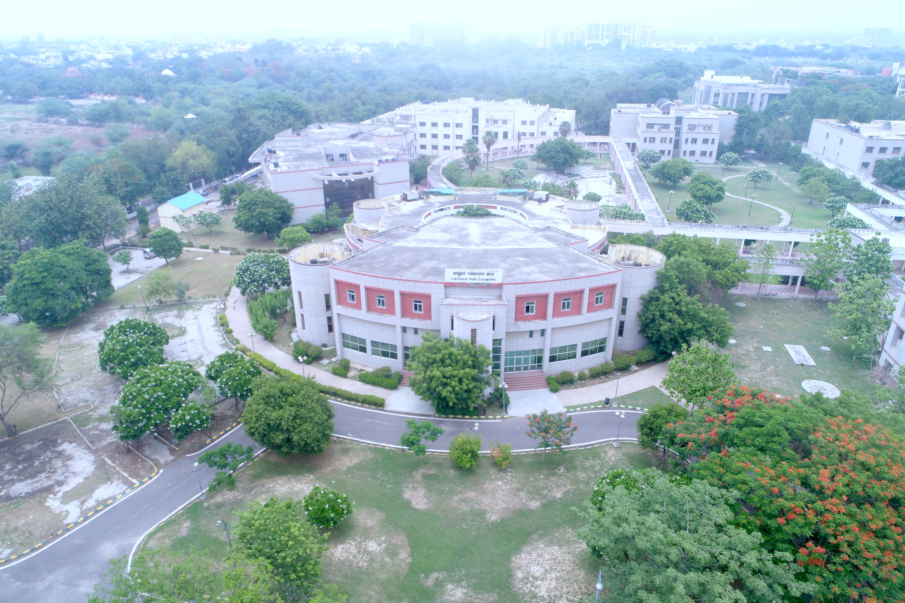

Chhatrapati Sahuji Maharaj University,Kanpur
Uttar Pradesh State University, Formerly known as Kanpur University
Home
Academics
Admissions
Gallery
About Us

Contact Us:
Chhatrapati Shahu Ji Maharaj University, Kanpur
(Formerly Kanpur University, Kanpur)
Kalyanpur, Kanpur-208024
E-mail: csjmu@kanpuruniversity.org